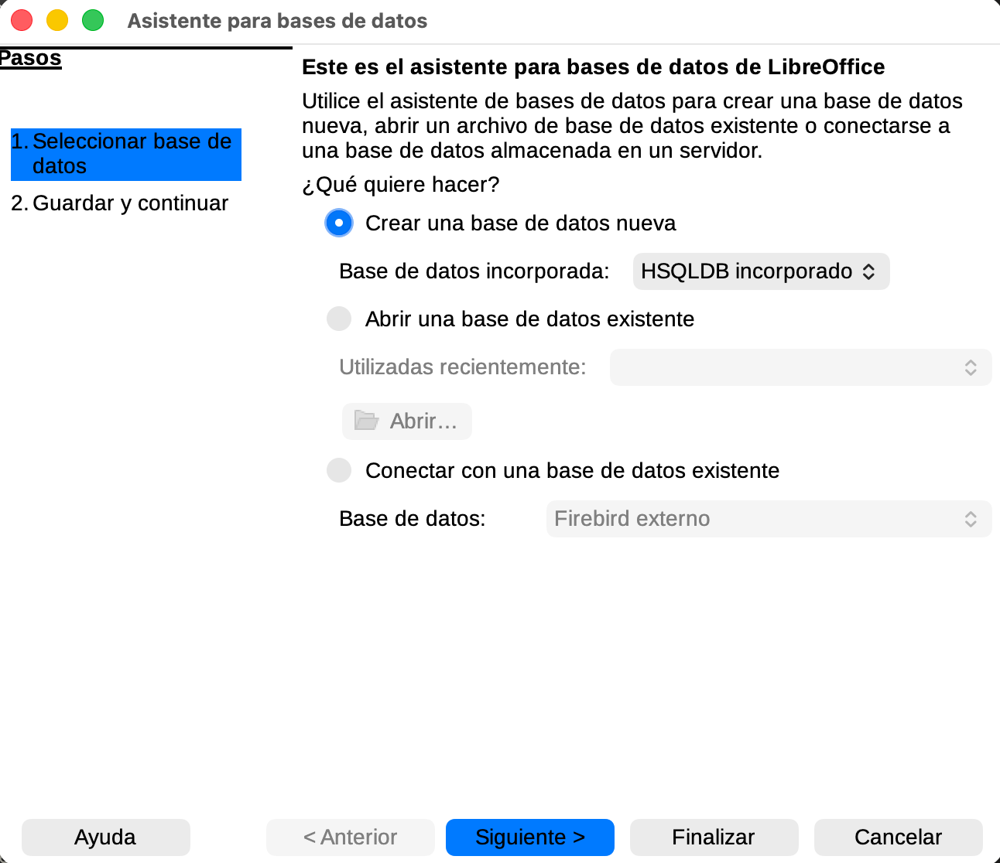
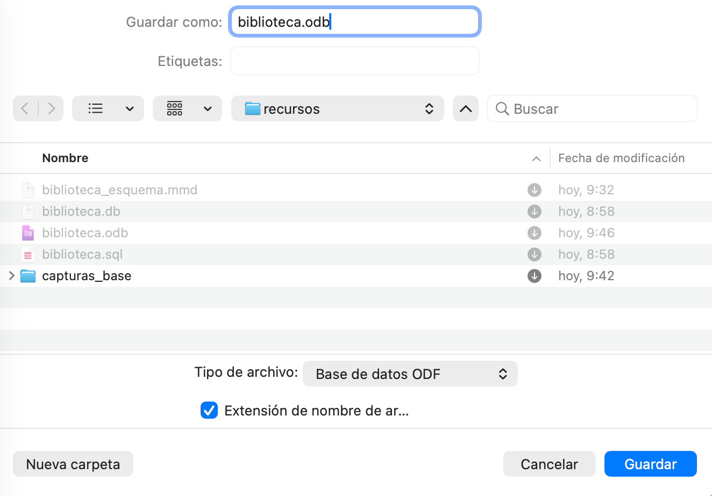
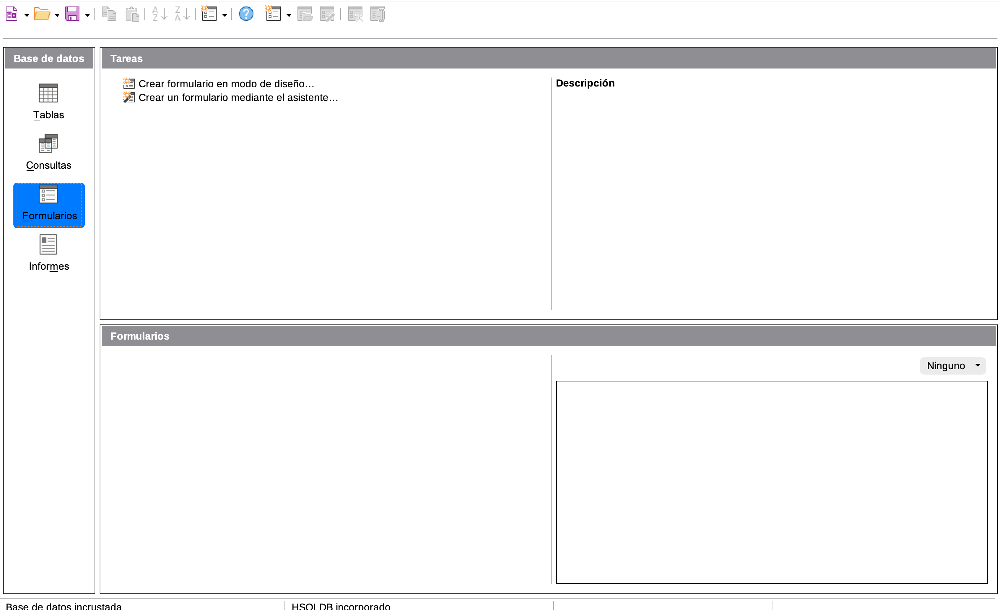
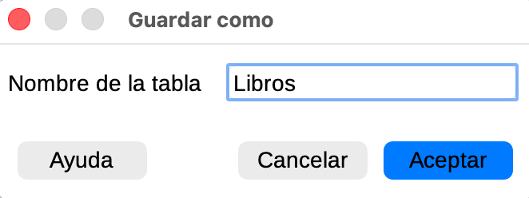
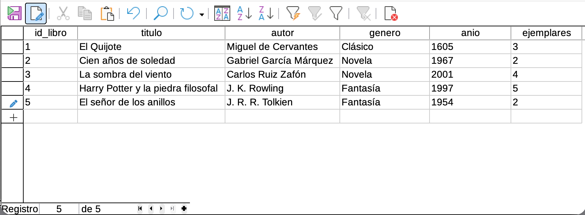

Contenido
Lo que vas a hacer hoy
- Entender qué es una base de datos relacional y los conceptos básicos: tabla, registro, campo, clave primaria.
- Elegir el tema de tu proyecto (uno de los 6 del catálogo).
- Crear tu propia base de datos vacía en LibreOffice Base.
- Diseñar la primera tabla y meter 5 registros con IDs del 1 al 5.
NotaImportante: en esta unidadbibliotecaes solo el ejemplo del profesor
A lo largo de las sesiones verás capturas de una base de datos llamada biblioteca. Esa base de datos es el ejemplo del profesor, no la tuya. Tú no la copias. Tú vas a construir tu propia base de datos sobre el tema que elijas en el catálogo (Streaming, Tienda de tecnología, Veterinaria, Liga deportiva, Tatuajes/peluquería o Gimnasio).
1. ¿Qué es una base de datos relacional?
Una base de datos es un sistema para guardar información de forma organizada y poder consultarla rápido. Una base de datos relacional organiza la información en tablas (parecidas a las hojas de una hoja de cálculo) que se pueden conectar entre sí mediante valores comunes.
Tres conceptos que vas a usar todo el tiempo:
- Tabla: una entidad del mundo real (Series, Productos, Mascotas…). Es como una hoja de cálculo con columnas y filas.
- Registro: una fila de la tabla. Una serie concreta, un producto concreto, una mascota concreta.
- Campo: una columna de la tabla. Un atributo de la entidad: el título de la serie, el precio del producto, la edad de la mascota.
Y un concepto clave para que la base de datos no se vuelva loca:
- Clave primaria (Primary Key): un campo cuyo valor identifica de forma única a cada registro. Suele ser un número entero que va 1, 2, 3, 4… Por convención lo llamaremos
id_loquesea(id_serie,id_producto,id_mascota…).
2. Elige tu tema
En las próximas sesiones vas a construir una base de datos sobre uno de estos 6 temas. Elige ahora y manténlo durante toda la unidad. Hoy vas a crear la primera tabla de tu tema (la entidad principal). En S2 añadirás otras dos tablas y las conectarás.
| Tema | Primera tabla (la de hoy) | 5 campos sugeridos |
|---|---|---|
| 1. Plataforma de streaming | Series |
id_serie, titulo, anio, plataforma, valoracion |
| 2. Tienda de tecnología | Productos |
id_producto, nombre, marca, precio, stock |
| 3. Clínica veterinaria | Mascotas |
id_mascota, nombre, especie, raza, edad |
| 4. Liga deportiva | Equipos |
id_equipo, nombre, ciudad, estadio, anio_fundacion |
| 5. Tatuajes / peluquería | Clientes |
id_cliente, nombre, apellidos, telefono, email |
| 6. Gimnasio | Socios |
id_socio, nombre, apellidos, fecha_alta, plan |
TipAntes de seguir
Si dudas entre dos temas, abre el Brief del proyecto para ver con más detalle cómo será cada uno al completo. Una vez elegido, anota el tema en tu cuaderno: lo necesitarás cada sesión.
3. Crea tu base de datos vacía
Abre LibreOffice Base. Ve a Archivo → Nueva → Base de datos….
Aparecerá un asistente. En el primer paso, marca “Crear una base de datos nueva” y, muy importante, elige el motor HSQLDB integrado, no Firebird.

Warning¿Por qué HSQLDB y no Firebird?
LibreOffice Base ofrece dos motores. En esta unidad usaremos HSQLDB integrado porque es el que tienen configurado los equipos del IES y el que coincide con todas las capturas del material. Si eliges Firebird por error, las pantallas no se parecerán a las de este sitio y te costará seguir los pasos.
Pulsa Siguiente. En el segundo paso deja marcadas las dos casillas por defecto (“Sí, registrar la base de datos” y “Abrir la base de datos para editarla”) → Finalizar.
Aparecerá el diálogo Guardar como. Ponle un nombre que identifique tu tema, por ejemplo streaming.odb, tienda_tecnologia.odb, veterinaria.odb. Guárdalo en la carpeta que te haya indicado el profesor.

La captura muestra
biblioteca.odbporque es el ejemplo del profesor. Tú guardarás tu propia base de datos con el nombre de tu tema.
Tras guardar, se abre la ventana principal de Base con la barra lateral izquierda: Tablas, Consultas, Formularios, Informes. Esta es la pantalla con la que vas a trabajar las próximas tres sesiones.

4. Diseña la primera tabla
En la barra lateral izquierda haz clic en Tablas. En el panel central pulsa “Crear tabla en vista Diseño…”.
Se abre la vista Diseño, donde defines los campos de la tabla sin meter todavía ningún dato. Esto es importante: primero diseñas, después rellenas.
Crea los 5 campos de tu primera tabla siguiendo la fila de tu tema en la tabla de la sección 2. Para cada campo:
- Escribe el nombre del campo (por ejemplo
id_serie). - Elige el tipo:
id_*→ Entero [INTEGER]- Texto (títulos, nombres, marcas, ciudades…) → Texto [VARCHAR], longitud según necesites (50–200 caracteres).
- Año o edad → Entero pequeño [SMALLINT].
- Precio o valoración con decimales → Decimal [DECIMAL].
- Fecha (
fecha_alta) → Fecha [DATE].

La captura corresponde a la tabla
Librosdel ejemplo del profesor. La tuya tendrá los campos de tu tema, pero la pantalla se ve igual.
Ahora marca tu campo id_* como clave primaria: haz clic con el botón derecho sobre la flecha verde a la izquierda del nombre del campo y elige “Llave primaria”. Aparecerá un icono de llave amarilla.

Cierra la pestaña de diseño con Ctrl+W. Te preguntará por el nombre de la tabla: pon el nombre que aparece en la columna “Primera tabla” de tu fila (Series, Productos, Mascotas…).

ImportanteTodavía no abras la tabla
Has diseñado la estructura. Antes de meter datos, comprueba en la barra lateral que tu tabla aparece listada. Si está, sigue al paso 5.
5. Introduce 5 registros
Ahora sí: doble clic en tu tabla en la barra lateral. Se abre la vista hoja de datos, donde introduces los registros.
Mete 5 registros con id_* del 1 al 5 correlativos. Es muy importante mantener esos IDs porque en S2 las otras tablas se conectarán con esta usando esos números.

La captura es de
Librosdel ejemplo del profesor. La tuya tendrá tus propios títulos, marcas, mascotas o equipos.
WarningCuida la ortografía de tus datos
Los datos que metas en la base de datos son simultáneamente ejemplo de campo de texto y ejemplo de buen español. Escribe con tildes y mayúsculas reales: Stranger Things, La Casa de Papel, Lucía Gómez, José Martínez, Pastor Alemán, Salmorejo cordobés.
Excepción técnica: las direcciones de correo electrónico no llevan tildes ni eñes en la parte antes de la @, por convención del estándar SMTP. Si tu tema incluye un campo email, usa el dominio del centro: nombre.apellido@iesmajuelo.com (sin tildes en nombre.apellido).
Cuando termines, cierra la pestaña de la hoja de datos. Tu tabla queda guardada dentro del archivo .odb.
ImportanteAntes de irte: sube tu archivo a Moodle
Los ordenadores del IES borran todo al apagarse. Sube tu .odb a la tarea “TAREA - Bases de datos” del curso de Moodle, en estado borrador (no pulses “Entregar tarea”). Si no lo haces, mañana empiezas otra vez desde cero.
El procedimiento completo está en Cómo se guarda tu trabajo entre sesiones.
Producto final de S1
Al terminar la sesión debes tener:
- Tu archivo
.odbcon un nombre que identifique tu tema. - 1 tabla diseñada (la entidad principal) con sus 5 campos y la clave primaria marcada.
- 5 registros con
id_*correlativos del 1 al 5.
En la siguiente sesión añadirás 2 tablas más y aprenderás a conectarlas para que la base de datos sepa, por ejemplo, que el préstamo número 7 lo hizo el lector número 3 sobre el libro número 6.
Si te atascas
| Problema | Qué pasa | Cómo se arregla |
|---|---|---|
| El asistente solo me ofrece Firebird | Tu LibreOffice tiene HSQLDB desactivado | Avisa al profesor: hay que activarlo en Preferencias. |
| He cerrado la pestaña sin guardar | Has perdido el diseño de la tabla | Vuelve a empezar el paso 4. No pasa nada, ahora vas más rápido. |
| No me deja marcar clave primaria | Puede que estés pulsando sobre el nombre del campo | Click derecho sobre la flecha verde a la izquierda del nombre, no sobre el texto del nombre. |
| Mi tabla pone (Sin nombre) en la barra lateral | No le pusiste nombre al guardarla | Click derecho sobre la tabla → “Renombrar”. |